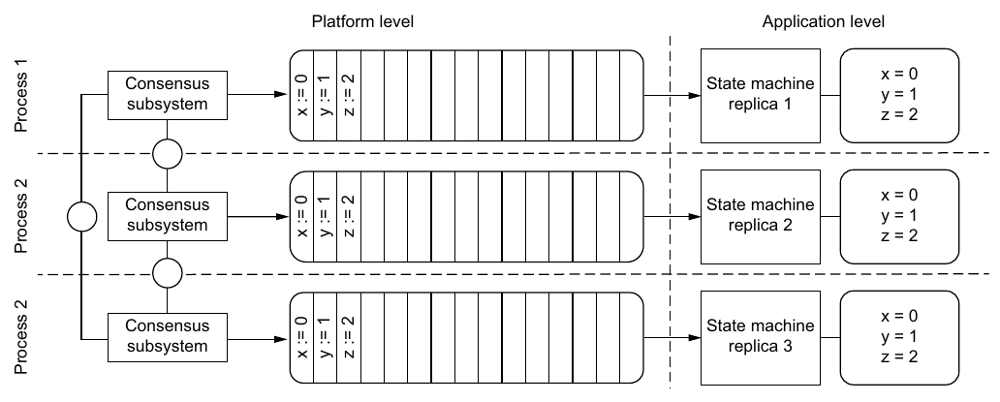
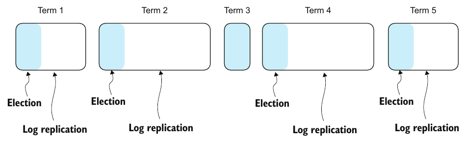
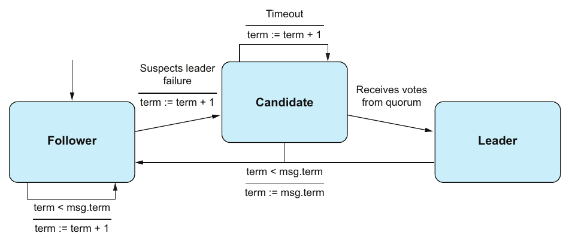
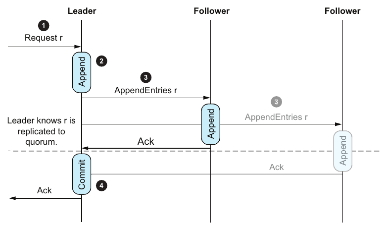
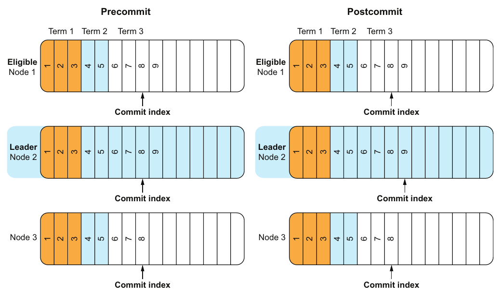

Chapter 10 · pp. 131–144
Distributed consensus
Think Distributed Systems, 1st Edition
Distributed consensus lets a group of redundant processes advance in lockstep and act as one, so some can compensate for the failure of others. Failing to agree is often catastrophic: did the transaction commit, which operation came first, who holds the lock (p. 131)? Consensus is trivial without failures and notoriously hard with them. Consensus algorithms guarantee safety and aim for liveness, which FLP shows can't be guaranteed in an asynchronous system without clocks (p. 132).
The chapter specifies consensus as validity, integrity and agreement (safety) plus termination (liveness) (pp. 132–133). It explains why consensus matters: state machine replication turns a process into a fault-tolerant group (pp. 133–134). It tells the irony of its origin: Lamport set out to prove consensus impossible and produced Paxos, while Viewstamped Replication arguably came first (pp. 134–135). It explains how algorithms combine a leader with quorums (N = 2f + 1) (pp. 135–136). It then describes Raft in detail: the log and commit index, terms as fencing tokens, leader election, log replication, and the up-to-date-log rule behind state machine safety (pp. 136–141). It ends with three Raft puzzles (pp. 141–144).
The chapter’s own outline (from the book’s table of contents)
- 10.1 The challenge of reaching agreement — p. 132
- 10.2 System model — p. 132
- 10.3 State machine replication — p. 133
- 10.4 The origin—and irony—of consensus — p. 134
- 10.5 Implementing consensus — p. 135
- 10.5.1 Leader-based consensus — p. 135
- 10.5.2 Quorum-based consensus — p. 136
- 10.5.3 Combining leader and quorum — p. 136
- 10.6 Raft — p. 136
- 10.6.1 The log — p. 137
- 10.6.2 Terms — p. 138
- 10.6.3 Leader Election protocol — p. 139
- 10.6.4 Log Replication protocol — p. 140
- 10.6.5 State machine safety — p. 141
- 10.7 Raft puzzles — p. 141
- 10.7.1 Puzzle 1 — p. 141
- 10.7.2 Puzzle 2 — p. 142
- 10.7.3 Puzzle 3 — p. 142
From the book
10.1 The challenge of reaching agreement
Consensus asks concurrent processes that communicate over a network to agree on a single value (p. 132). It's trivial when components never fail and the network delivers exactly once and in order. It's hard when components fail and the network reorders, delays, loses or duplicates messages (p. 132).
Atomic commitment was a consensus problem: 2PC's coordinator failure could block the protocol, keeping safety but sacrificing liveness (p. 132).
Vault note: the book's text refers to atomic commitment as Chapter 8 (p. 132); it is covered in Chapter 6.
Consensus algorithms guarantee safety and aim for (without guaranteeing) liveness: no single component failure can halt the system (p. 132).
Aha! moment, the impossibility theorem (p. 132): Fischer, Lynch and Paterson showed that in an asynchronous system without clocks, consensus can't be guaranteed in all circumstances, even with a single faulty node. The theorem is about liveness. Consensus is possible in more constrained models, for example asynchronous systems with clocks.
From the book
10.2 System model
A system is a set of Processes and a set of Values (p. 132):
- A process may fail by crashing (it simply halts).
- A process may Propose(p, v) and Decide(p, v).
| Property | Kind | Formal statement (p. 133) | In words |
|---|---|---|---|
| Validity | Safety | Decide(p, v) ⇒ ∃ q: Propose(q, v) | Only proposed values are decided |
| Integrity | Safety | Decide(p, v) ∧ Decide(p, v′) ⇒ v = v′ | A decision is permanent |
| Agreement | Safety | Decide(p, v) ∧ Decide(q, v′) ⇒ v = v′ | No two correct processes decide differently |
| Termination | Liveness | ∀ alive p, ∃ v: ◇□ Decide(p, v) | Every nonfailed process eventually decides |
From the book
10.3 State machine replication
Consensus is the foundation of state machine replication, which mechanically turns a process into a fault-tolerant group. It makes physical components behave like one logical component that survives the loss of one of them (Figure 10.1) (p. 133). The principle: identical deterministic processes, the same start state, the same inputs in the same order, give the same outputs and the same state. So lockstep reduces to consensus on the log (pp. 133–134).


From the book
10.4 The origin—and irony—of consensus
| Algorithm | Story (pp. 134–135) |
|---|---|
| Paxos (Lamport, 1989) | Lamport, the 2013 Turing Award winner, set out to prove fault-tolerant consensus impossible and instead devised what is often considered the first fault-tolerant consensus algorithm. It treats consensus as a single decision: a set of write-once registers (the replicas) all get the same value |
| Multi-Paxos | Extends Paxos to a series of decisions, which makes it suitable for state machine replication |
| Viewstamped Replication (Oki and Liskov, 1988) | Less famous and never uses the word consensus, but solves the same problem, so it can be regarded as the first published consensus algorithm |
From the book
10.5 Implementing consensus
Multi-Paxos, Raft and Viewstamped Replication combine a leader with a quorum (p. 135).
| Approach | Works when… | Breaks when… (pp. 135–136) |
|---|---|---|
| Leader only (a Benevolent Dictator for Life, who decides everything and broadcasts it) | Nothing fails and messages are reliable | The BDFL fails (no decisions at all), or a decision message is lost (inconsistency) |
| Quorum (a decision counts once a majority acknowledges it) | A majority is up | — |
| Leader elected by a quorum, which commits after a quorum acknowledges | Combines decisiveness with reliability | — |
10.5 Implementing consensus
10.5.2 Quorum-based consensus
p. 136- A quorum is a subset of processes with |Q| > N/2, so any two quorums intersect in at least one process.
- To tolerate f failures you need f + 1 nonfailed processes, so N = 2f + 1.
- The intersection prevents split brain: at least one node knows about the decisions of both quorums and acts as a single point of coordination.
For {p1, p2, p3} (Table 10.2), the quorums are {p1, p2, p3}, {p1, p2}, {p1, p3} and {p2, p3}. The singletons {p3}, {p2} and {p1} are not quorums.
From the book
10.6 Raft
Raft manages replicated logs, the basis of state machine replication. A leader decides the order of entries, and a quorum decides their inclusion, or commitment (pp. 136–137). Raft is designed for understandability but remains complex. The book follows the original paper, and variants may behave differently (p. 137).
10.6 Raft
10.6.1 The log
pp. 137–138- Two logs are consistent if one is a subsequence of the other up to the commit index: the highest index known to be replicated on a quorum, and therefore committed.
- Log consistency is a prerequisite for state machine safety: committed entries are never lost and may be applied to the application's state machine. Entries past the commit index could be lost (Figure 10.3).
- Raft uses the logs themselves to guarantee this: in an election, only the candidates with the most up-to-date logs are eligible.
Aha! moment: Raft has two layers. The platform level runs election, replication and commitment, then hands each committed entry to the application level, which applies it to its own state machine (pp. 137–138).
10.6 Raft
10.6.2 Terms
pp. 138–139Time is divided into monotonically increasing terms, a logical clock. Each term has an election phase (the Request Vote protocol) and a log-replication phase (the Append Entries protocol) (Figure 10.4). Per term, Raft elects a leader and delegates the log to it. The leader accepts entries, replicates them and decides when they may be applied (p. 138).


Aha! moment, terms as fencing tokens (pp. 138–139): Raft does not guarantee that only one node believes it's the leader. It guarantees that only one node can act as the leader. A stale leader has a lower term, and nodes reject messages with a term lower than their own.
10.6 Raft
10.6.3 Leader Election protocol
pp. 139–140

- Follower: listens to the leader. Its election timer has a random timeout and resets on every message. On expiry, it suspects the leader has failed.
- Candidate: increments its term, votes for itself and sends
RequestVoteto every other node. There are three outcomes: a quorum vote (it becomes leader), a split vote (a new election) or demotion (it learns of a new term and leader). - Leader: steps down to follower when it learns of a newer term and leader.
10.6 Raft
10.6.4 Log Replication protocol
p. 140- Accept: the leader accepts an entry from a client.
- Append: it appends the entry to its own log.
- Propagate: it sends
AppendEntriesto the other nodes. - Commit: followers append and acknowledge. Once a quorum, including the leader, has acknowledged, the leader advances the commit index (Figure 10.6).


10.6 Raft
10.6.5 State machine safety
p. 141If a process has applied the entry at index i, no process will ever apply a different entry at index i. Raft enforces this by electing only a candidate with the most up-to-date log:
| Compare the last entries' … | More up to date |
|---|---|
| Terms differ | The log whose last entry has the later term |
| Terms equal | The longer log |
So if a quorum holds an entry, no candidate without it can win, because the voting quorum intersects the quorum that holds it. A committed entry is therefore present in every future leader's log (p. 141).
From the book
10.7 Raft puzzles
Each puzzle has a three-node cluster in term 3 (p. 141). The author prefers thinking in systems: many behaviors are implicit consequences of an algorithm interacting with the system, which is the point of Puzzle 3 (p. 141).
| Puzzle | Situation | Question | Answer (pp. 141–144) |
|---|---|---|---|
| 1 (Figure 10.7) | Logs of 8, 9 and 7 entries | Who leads term 3? | Node 2: the leader accepts and appends client requests first, so its log is the most advanced |
| 2 (Figure 10.8) | Leader node 2 appended request 9 but didn't propagate it | Can request 9 be lost? | Yes. If node 2 loses leadership, the term-4 leader never heard of it. Safety isn't violated, because it wasn't committed |
| 3 (Figure 10.9) | Node 2 propagated request 9 to node 1, which acknowledged; node 2 didn't get the acknowledgment and crashes | Can request 9 be lost? | No. Node 1 can't know whether node 2 committed and answered the client before crashing, so it must assume 9 is committed. Only node 1 has the most up-to-date log, so only it can be elected, and it replicates 9 to node 3 and commits it (Figure 10.10) |


Try it
Raft's election restriction and the three puzzles
Open full screen ↗ · the simulation is the vault’s own model of the mechanism the book describes.
Recap
Trade-offs at a glance
| Choice | Buys | Costs |
|---|---|---|
| Single leader (BDFL) | Simple; decisions are totally ordered | No progress when it fails; lost decisions break consistency |
| Quorum of 2f + 1 | Tolerates f crashes; quorums intersect | A majority round trip per decision; no progress without a majority |
| Leader + quorum (Raft, Multi-Paxos, VR) | Ordering by the leader, safety by quorums | Leader elections stall progress; random timeouts are a liveness heuristic (FLP) |
| Larger cluster | Tolerates more failures | Bigger quorums, so slower commits |
| Electing only up-to-date logs | Committed entries are never lost | Some nodes can't be elected; uncommitted entries may still be kept or lost |
Recap
Key takeaways
- Consensus = safety (validity, integrity, agreement) + liveness (termination). Agreement and integrity capture the intuition: everyone decides the same value and nobody goes back on their word (pp. 132–133).
- FLP: in an asynchronous system without clocks, consensus can't be guaranteed even if only one node can fail. The result is about liveness, and consensus is possible in more constrained models, such as asynchronous systems with clocks (p. 132).
- State machine replication: identical deterministic processes that start in the same state and get the same inputs in the same order end in the same state. Lockstep reduces to consensus on the log (pp. 133–134).
- Quorums: Q > N/2, so any two quorums intersect, which prevents split brain. Tolerating f failures needs N = 2f + 1 (p. 136).
- Leader + quorum: a leader, elected by a quorum, proposes values and commits once a quorum acknowledges them. Multi-Paxos, Raft and Viewstamped Replication all work this way (p. 136).
- Terms are a logical clock and a fencing token. Raft doesn't prevent two nodes from believing they lead; it prevents more than one from acting as leader, because messages with lower terms are rejected (pp. 138–139).
- State machine safety: no two processes ever apply different entries at the same index. Raft ensures it by electing only candidates whose log is at least as up to date (higher last term, or the same term and longer) (p. 141).
- Puzzle 3: an uncommitted entry acknowledged by a follower must not be lost. That follower can't know whether the leader committed it before crashing (pp. 142–144).
Practice
Check yourself
Questions and answers are the vault's, written from the notes above; answers cite the book's pages.
1Name the three safety properties and the liveness property of consensus.Show answer
Validity, integrity and agreement (safety); termination (liveness) (pp. 132–133).
2What does FLP rule out, and what doesn't it rule out?Show answer
Guaranteed consensus in an asynchronous system without clocks with even one possible crash, which is a liveness limit. It doesn't rule out consensus in more constrained models, such as asynchronous systems with clocks (p. 132).
3Why does state machine replication reduce to consensus on a log?Show answer
Identical deterministic processes that receive the same inputs in the same order reach the same state, so agreeing on the input log is all that's needed (pp. 133–134).
5In what sense does Raft guarantee "one leader"?Show answer
Two nodes may both believe they're the leader, but only the one with the current term can act. Messages from a lower term are rejected, so the term is a fencing token (pp. 138–139).
6Node A's log ends with an entry from term 3 at index 7; node B's ends with term 2 at index 9. Which is more up to date?Show answer
A. When the last terms differ, the later term wins, regardless of length (p. 141).
7In Puzzle 3, why must request 9 survive even though it wasn't committed when the leader crashed?Show answer
Node 1 acknowledged it and can't know whether the leader committed it and replied to the client. Node 1 is also the only node eligible to become leader, so it keeps 9 and commits it (pp. 142–144).
Supplement
Beyond the book
Vault supplement — not from the book.
- Why random election timeouts? If every follower timed out at once, each would vote for itself and split the vote every term. Randomizing the timeout, which the Raft paper suggests drawing from 150–300 ms, usually lets one candidate start first and win. It's a practical answer to FLP: liveness depends on timing, safety never does. The election-timeout lab measures how often split votes happen as the timeout range narrows.
- Committing entries from earlier terms. The real Raft paper adds a rule the book doesn't cover: a leader only counts replicas for entries of its own term, and earlier-term entries become committed indirectly. Without this, an entry stored on a majority could still be overwritten (Figure 8 of the Raft paper).
- Paxos in this vault. Database Internals Ch. 14 steps through single-decree Paxos and Flexible Paxos quorums; DDIA Ch. 10 runs a Raft-style cluster with partitions.
Next steps
Keep going
Run it
Why does Raft randomize election timeouts? Each simulated term, every follower draws a timeout between 150 ms and 150 ms + spread. A follower becomes a candidate when its timer fires, unless a RequestVote from an earlier candidate reached it first; then it votes for the first candidate it heard from. A candidate wins with a quorum; otherwise the vote is split and a new term starts. The script runs 5,000 elections per row for 3- and 5-node clusters and up to 50 rounds each.
cd books/think-distributed-systems/lab/10-raft-election-timeouts
python3 raft_election_timeouts.pyConnections
- Related chapters: 2. System models, order, and time (partial synchrony and logical clocks), 3. Failure tolerance (detection for safety, mitigation for liveness, as with quorums), 6. Distributed transactions (atomic commitment as consensus), 8. Replication (log-based, single-leader replication), 9. Consistency (consensus implements linearizability).
- Run it: Raft election timeouts — simulates leader elections with randomized timeouts in clusters of 3 and 5 and counts split votes and rounds to elect a leader.